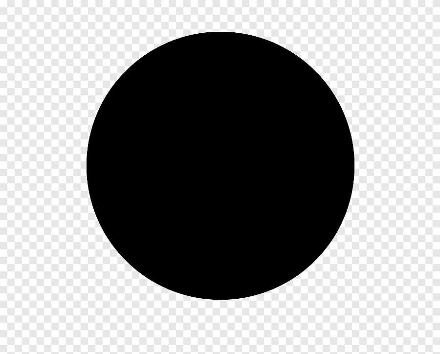

CV
laurent leclercq
8 rue de petiron
75368 lavilledespetiron
Né le 98/65/9863
Permie B
Mon CV
jean.dupetitron@gmail.com
 telephone : 0705060102
telephone : 0705060102
chomeur professionnel

formations
9853
Master 2 Marketing & Marketing Direct, mention bien, Institut d'Adminitration des Entreprises chez H2O, Lille bureau de 10m2
9855
DEUG Langues Etrangères Appliquées anglais-espangnol, mention bien.
9859
Baccalauréat Economique et Social option anglais, mention bien, Orléans
experiences professionnelles
9859 a aujourd'hui: AENCLASSIFIELDS, groupe Le Figaro (Paris, 9 e) - Chef de produit
- Acquisition de nouveaux internautes : mise en oeuvre du plan relationnel dela marque (message, planning, visuels), suivi des partenariats web, dscobrandings et des échanges de visibilité
- Animation du site : définition et mise en oeuvre de la stratégie d'e-mailings,mise en place d'opérations événementielles type jeux-concours, decampagnes d'auto-promotion, collaboration avec le pôle éditorial, (contenus,newsletter...) et bilan des opérations
- Pilotage de l'activité du site : suivi statistique, définition des besoins pour laBI, réalisation de fiches statistiques pour les commerciaux de l'entreprise etpour les relations presse
9849 a 9851: 1000 MERCIS, agence de marketing interactif
- Prises de briefs des clients et rédaction des propositions (acquisition etfidélisation)
- Intervention dans la conception, la réalisation et le suivi d'opérations demarketing viral de type jeux-concours (PriceMinister, BNP Paribas, LeFigaro, Bayard...)
- Mise en place et suivi d'opérations (Selectour, SFR, Cetelem...)
9851 a 9854: FRANCELOISIRS, club de produits culturels (Paris15e) - Chef de produit junior
- Mise en place & suivi opérationnel des campagnes de mailings derecrutement destinés aux anciens adhérents en France, en Suisse et enBelgique (coordination des intervenants, relecture...)
- Bilan des opérations & suivi du budget
COMPETENCES LINGUISTIQUES & INFORMATIQUES
Langues
|
Lu |
Ecrit |
Parlé |
| anglais |
10% |
10% |
10% |
| espagnol |
0% |
0% |
0% |
Logiciel
Pack office, notions, de base sur Photoshop & QuarkXpress Bonne maîtrise du logiciel Neolane (gestion des campagnes d'e-mailings),notions decode html
CENTRES D'INTÉRÊT
Voyages
3 séjours linguistiques en pays anglophones :
- Angleterre & Irlande,
- Etats-Unis
- Espagne
Editorial
Rédactrice en chef du journal de l'IAE en Master 2 & écriture
Création
Peinture & scrapbooking